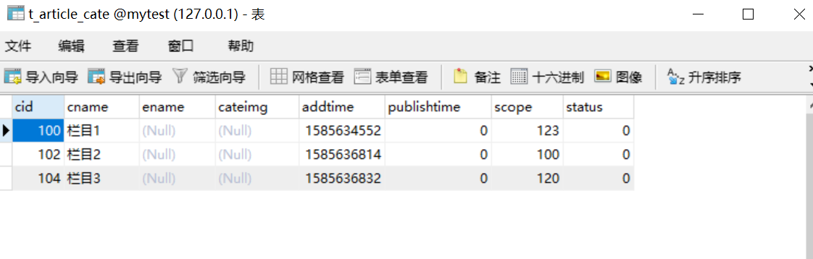

Contents
10.19. 操作mysql¶
10.19.1. 1.Go操作MySQL¶
1.1 连接¶
Go语言中的database/sql包提供了保证SQL或类SQL数据库的泛用接口，并不提供具体的数据库驱动。
使用database/sql包时必须注入（至少）一个数据库驱动。
我们常用的数据库基本上都有完整的第三方实现。例如：MySQL驱动
1.2 下载依赖¶
$ go get -u github.com/go-sql-driver/mysql
1.3 使用MySQL驱动¶
func Open(driverName, dataSourceName string) (*DB, error)
Open打开一个dirverName指定的数据库，dataSourceName指定数据源，一般至少包括数据库文件名和其它连接必要的信息。
import (
"database/sql"
_ "github.com/go-sql-driver/mysql"
)
func main() {
// DSN:Data Source Name
dsn := "user:password@tcp(127.0.0.1:3306)/dbname"
db, err := sql.Open("mysql", dsn)
if err != nil {
panic(err)
}
defer db.Close() // 注意这行代码要写在上面err判断的下面
}
1.4 Mysql数据库操作¶
我们先建立表结构：
CREATE TABLE t_article_cate (
`cid` int(10) NOT NULL AUTO_INCREMENT,
`cname` varchar(60) NOT NULL,
`ename` varchar(100),
`cateimg` varchar(255),
`addtime` int(10) unsigned NOT NULL DEFAULT '0',
`publishtime` int(10) unsigned NOT NULL DEFAULT '0',
`scope` int(10) unsigned NOT NULL DEFAULT '10000',
`status` tinyint(1) unsigned NOT NULL DEFAULT '0',
PRIMARY KEY (`cid`),
UNIQUE KEY catename (`cname`)) ENGINE=InnoDB AUTO_INCREMENT=99 DEFAULT CHARSET=utf8 COLLATE=utf8_general_ci;
下面代码使用预编译的方式，来进行增删改查的操作，并通过事务来批量提交一批数据。预编译语句 (PreparedStatement)提供了诸多好处，可以实现自定义参数的查询，通常来说，比手动拼接字符串 SQL 语句高效，可以防止SQL注入攻击。
package main
import (
"database/sql"
"fmt"
_ "github.com/go-sql-driver/mysql"
"time"
)
type DbWorker struct {
Dsn string
Db *sql.DB
}
type Cate struct {
cid int
cname string
addtime int
scope int
}
// 因为Go是强类型语言，所以查询数据时先定义数据类型
func main() {
dbw := DbWorker{
Dsn: "root:admin#123@tcp(localhost:3306)/mytest?charset=utf8mb4"}
// 支持下面几种DSN写法，具体看mysql服务端配置，常见为第2种
// user@unix(/path/to/socket)/dbname?charset=utf8
// user:password@tcp(localhost:5555)/dbname?charset=utf8
// user:password@/dbname
// user:password@tcp([de:ad:be:ef::ca:fe]:80)/dbname
dbtemp, err := sql.Open("mysql", dbw.Dsn)
dbw.Db = dbtemp
if err != nil {
panic(err)
return
}
//关闭数据库连接
defer dbw.Db.Close()
// 插入数据测试
dbw.insertData()
// 删除数据测试
dbw.deleteData()
// 修改数据测试
dbw.editData()
//查询数据测试
// 单行查询
dbw.queryRowDemo()
// 多行查询
dbw.queryMultiRowDemo()
//事务操作测试
dbw.transaction()
}
1.5 插入数据¶
//插入数据，sql预编译
func (dbw *DbWorker) insertData() {
stmt, _ := dbw.Db.Prepare(`INSERT INTO t_article_cate (cname, addtime,scope) VALUES (?, ?, ?)`)
defer stmt.Close()
ret, err := stmt.Exec("栏目1", time.Now().Unix(), 10)
// 通过返回的ret可以进一步查询本次插入数据影响的行数
// RowsAffected和最后插入的Id(如果数据库支持查询最后插入Id)
if err != nil {
fmt.Printf("insert data error:%v\n", err)
return
}
if LastInsertId, err := ret.LastInsertId(); err == nil {
fmt.Println("LastInsertId:", LastInsertId)
}
if RowsAffected, err := ret.RowsAffected(); err == nil {
fmt.Println("RowsAffected:", RowsAffected)
}
}
1.6 删除数据¶
//删除数据
func (dbw *DbWorker) deleteData() {
stmt, err_d := dbw.Db.Prepare(`DELETE from t_article_cate WHERE cid=?`)
ret, err_d := stmt.Exec(99)
// 通过返回的ret可以进一步查询本次插入数据影响的行数RowsAffected和
// 最后插入的Id(如果数据库支持查询最后插入Id).
if err_d != nil {
fmt.Printf("insert data error: %v\n", err_d)
return
}
if RowsAffected, err := ret.RowsAffected(); err == nil {
fmt.Println("RowsAffected:", RowsAffected)
}
}
1.7 修改数据¶
// 修改数据
func (dbw *DbWorker) editData() {
stmt, err := dbw.Db.Prepare(`UPDATE t_article_cate SET scope=? where cid=?`)
ret, erredit := stmt.Exec(123, 100)
// 通过返回的ret可以进一步查询本次插入数据影响的行数RowsAffected和
// 最后插入的Id(如果数据库支持查询最后插入Id).
if erredit != nil {
fmt.Printf("insert data error: %v\n", err)
return
}
if RowsAffected, err := ret.RowsAffected(); err == nil {
fmt.Println("RowsAffected: ", RowsAffected)
}
}
1.8 查询数据¶
单行查询¶
// 单行查询
func (dbw *DbWorker) queryRowDemo() {
sqlStr := "select cname, addtime, scope from t_article_cate where cid=?"
var u Cate
// 非常重要：确保QueryRow之后调用Scan方法，否则持有的数据库链接不会被释放
err := dbw.Db.QueryRow(sqlStr, 100).Scan(&u.cname, &u.addtime, &u.scope)
if err != nil {
fmt.Printf("scan failed, err:%v\n", err)
return
}
fmt.Printf("canme:%s addtime:%d scope:%d\n", u.cname, u.addtime, u.scope)
}
多行查询¶
// 多行查询
func (dbw *DbWorker) queryMultiRowDemo() {
sqlStr := "select cname, addtime, scope from t_article_cate where cid>?"
rows, err := dbw.Db.Query(sqlStr, 50)
if err != nil {
fmt.Printf("query failed, err:%v\n", err)
return
}
// 非常重要：关闭rows释放持有的数据库链接
defer rows.Close()
// 循环读取结果集中的数据
for rows.Next() {
var u Cate
err := rows.Scan(&u.cname, &u.addtime, &u.scope)
if err != nil {
fmt.Printf("scan failed, err:%v\n", err)
return
}
fmt.Printf("canme:%s addtime:%d scope:%d\n", u.cname, u.addtime, u.scope)
}
}
1.9 事务处理¶
db.Begin()开始事务，Commit() 或 Rollback()关闭事务。Tx从连接池中取出一个连接，在关闭 之前都使用这个连接。Tx不能和DB层的BEGIN，COMMIT混合使用。
// 事务处理
func (dbw *DbWorker) transaction() {
tx, err := dbw.Db.Begin()
if err != nil {
fmt.Printf("insert data error: %v\n", err)
return
}
defer tx.Rollback()
stmt, err1 := tx.Prepare(`INSERT INTO t_article_cate (cname, addtime,scope) VALUES (?, ?, ?)`)
if err1 != nil {
fmt.Printf("insert data error: %v\n", err1)
return
}
for i := 100; i < 140; i++ {
cname := strings.Join([]string{"栏目-", string(i)}, "-")
_, err = stmt.Exec(cname, time.Now().Unix(), i+20)
if err != nil{
fmt.Printf("insert data error: %v\n",err)
return
}
}
err = tx.Commit()
if err !=nil{
fmt.Printf("insert data error: %v\n",err)
return
}
stmt.Close()
}